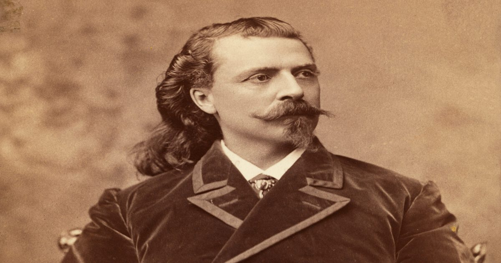

10 ключевых событий в жизни Баффало Билла
Уильям Фредерик Коди (1846-1917) вел знаменательную жизнь, начиная с его юношеских подвигов с Пони-экспрессом и службы в качестве разведчика армии США до его дней в качестве шоумена и международной иконы Буффало Билла.